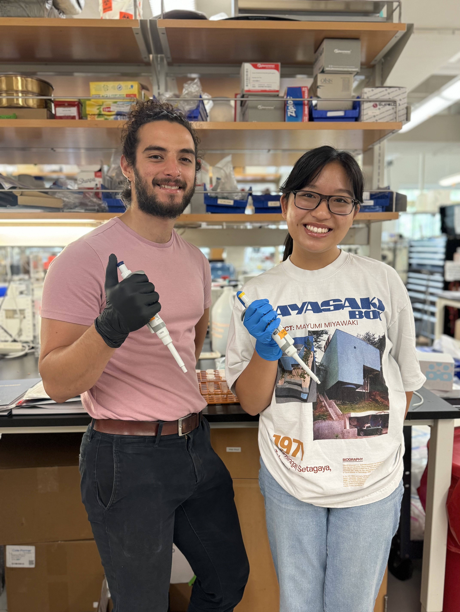
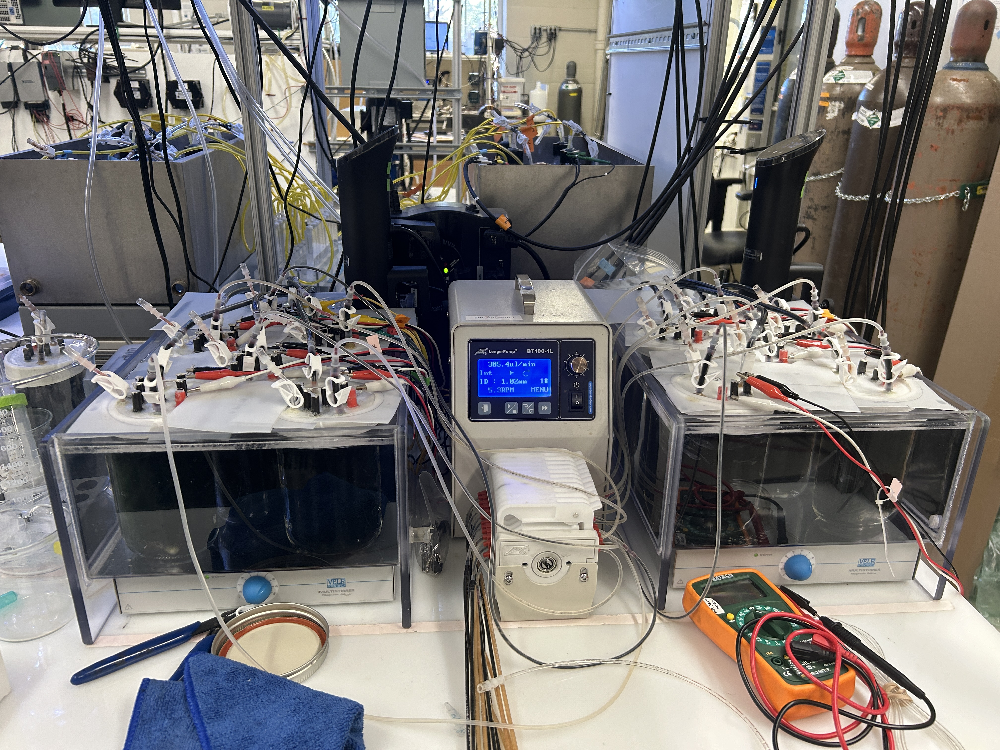
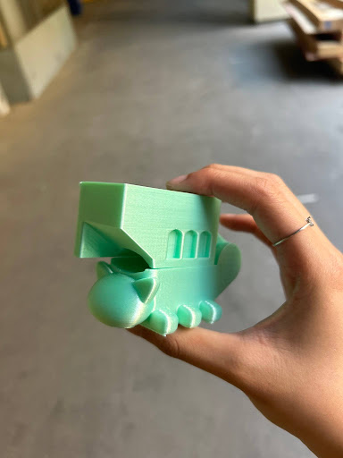
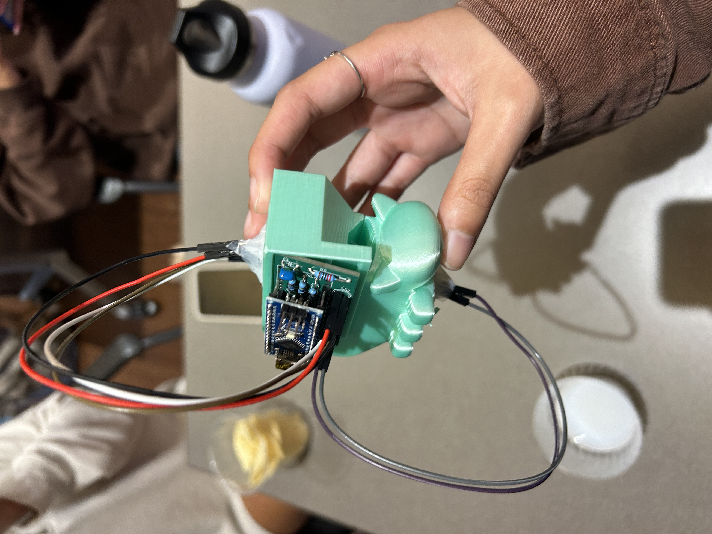
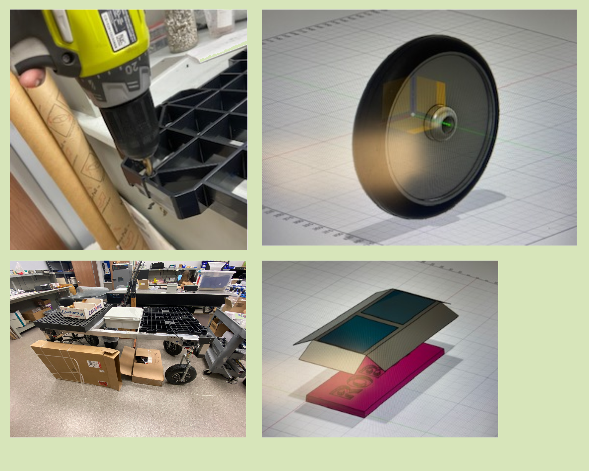
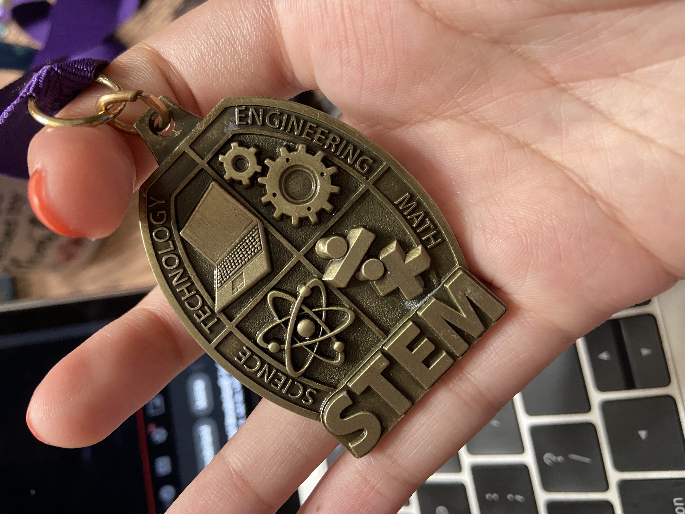
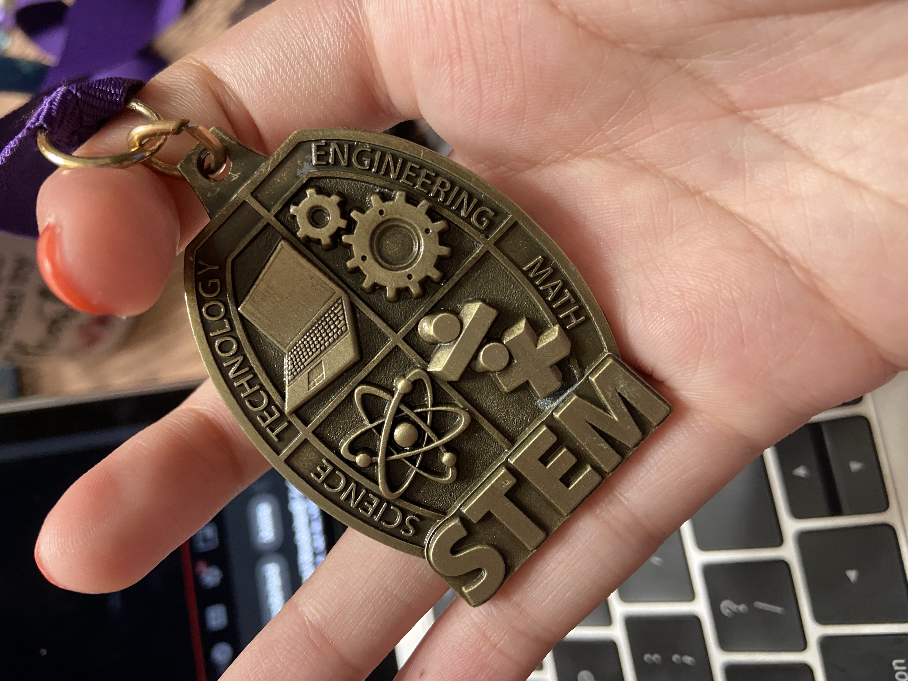

Hello and welcome to my website! My name is Deanna and I am a Mechnical Engineering student at UCLA. I created this website on Atom using HTML to refine my web development skills and share my interests with everyone. As an aspiring engineer, I hope to gain experience within the industry through internships, labs, and clubs. My primary focus is finding innovative solutions within the environmental, robotics, or military technology field. Within both, I enjoy designing new machines and figuring out different systems to solve each problem.
I am currently involved with the Society of Women Engineers (SWE) as Publicity Officer, University Rover Competition @ UCLA (URC) as Marketing Lead and Design Team member, and Kyodo Taiko as Publicity Co-Head on campus. Outside of clubs, I really enjoy playing piano and gaming on Roblox and Ensemble Stars. Catch me locking in at local boba shops or playing games in my dorm!
Socials & Contact
deannapham2004@g.ucla.edu | (626) 804-9107
Activities
Society of Women Engineers (2023-current)
Society of Women Engineers (2023-current)
Under the Society of Women Engineers (SWE) @ UCLA, I serve as Publicty Officer for the Mentorship Committee. I enjoy mentoring others and coming up with event ideas. While making graphics for programs such as the GradSWE Mentorship Program, I also am working on increasing the number of transfer students in SWE. Working currently with Pierce College and LA Valley College, I intend to help transfer students better connect with the engineering community and develop skills that will allow them to be sucessful at a 4 year university.
University Rover Competition @ UCLA (2024-current)
With the University Rover Competition @ UCLA, I seve as marketing team lead where I am head of funding and managing publicity. I also want to get involved in creating the rover by being an active member of design team.
Biomedical Engineering Society (2023-2024)
Being a part of the Biomedical Engineering Society (BMES), I can connect with other bioengineers. Being in BMES' build team, I am able to develop skills in Arduino, programming, and CAD. Currently, I am working on building a pulse oximeter.
Kyodo Taiko (2023-current)
Kyodo Taiko is a Japanese drumming ensemble at UCLA. Kyodo Taiko is a big part of my identity as I enjoy playing the drums and also being with my class, the Bachi Bats. Being an engineering major is tough, but taiko is a break from all the STEM. It allows me to let loose and express myself through music.
Projects
Wastewater Biosensor Research Lab @ USC (2024)
During my time working at the Smith Lab with PhD student,Connor SaucedaI was able to get hands-on experience on processing samples and managing the biosensors. These sensors monitored the anaerobic digestion from electroactive microorganisms. I was able to perform digital PCR, process 200+ samples, and learn about how the sensors are built and how wastewater can be processed. Throughout this journey, I have developed a love for environemental technology. I want to explore this more under a dry lab setting using mechanical aspects such as industrial technology to solve critical environmental problems.
By learning basic lab skills, I am now able to have a clear understanding of biosensors and the wasterwater treatment industry. One of the highlights of working with Connor was learning about how the sensors worked and seeing the data come to life in real-time. I really enjoy seeing the mechanics behind the sensors. Since they are electroactive, it has to be built a specific way so each reactor gets the right amount of resources to process wastewater. I love learning about new technology and hope to continue to apply this to a lab in the future.
Pulse Oximeter with BMES (2023-24)
From working on the pulse oximeter through BMES, I was able to learn about CADing, Arduino, and PCB board building.
My task for the pulse oximeter was creating the casing. We wanted it to be creative but functional so I themed it after Cat Bus from the movie My Neighbor Totoro. I also had a land in learning about Arduino through workshops at refined them by aiding in the final circuit design. For this, the components we used were a PD204 photodiode, an MCP-6041 Op Amp, a capacitor, an IR LED and a red LED.
Strawberry Transporter Robot (2022)
Through an internship at Tanner Research Lab in Duarte, California, I was able to work with engineers to learn how to CAD a strawberry transporter using Fushion360 and revamp their company website using HTML.
From working on Fushion360, I was able digitally sketch and design a model for a solar panel roof. The roof of the robot collects energy from the sun and charges up when the transporter is at rest. The roof in my sketch covers the entire top to prevent overheating and flaps to ensure maximum energy collected no matter the position of the transporter. Learning how to CAD allowed me to create other parts on the robot including the wheel and base of the robot. I also was able to learn about the Design Matrix, a new design process. I used this information and applied it to my robotics team in High School where we built robots using a Design Matrix and JPL Design Process.
By learning HTML, I was able to create websites for Tanner Research.Dronesis one of the websites I developed to highlight the company's work in creating an uncrewed aircraft system (sUAS). I was able to learn how to add links and videos. Additionally, I created aSummer Internshipwebsite which I was able to learn how to make a gallery, use "div" containers, learn how to format HTML code and how to use CSS so make the website aesthetically pleasing.
MASA Junior Project (2022-23)
MASA, or the Math and Science Academy at MHS is an academy dedicated to brighten students' STEM education. This academy allows priority for math and science APs, increase knowledge of STEM world through keynote speaker presentations, and allow for students to collaborate and connect with peers and experts to learn and teach more about STEM.
Every junior in the Math and Science Academy is tasked to do a Junior Project, competing for awards in this year long project. For mine, I worked with my sister, Kaylena, to build a dog wheelchair. This wheelchair was made out of PVC pipes, glue, and straps. Our goal was to build a dog wheelchair and have it work by the presentation date. We built and documented our build process in anengineering notebook,which we presented with our wheelchair. Utlizing the JPL Design Process and documentation skills, we created a working wheelchair by the end.
 
